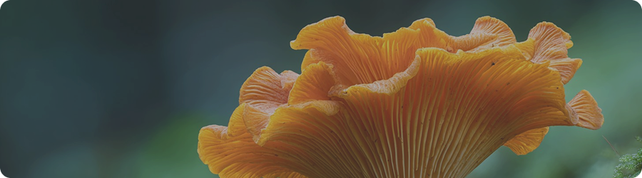

Лисичка
Признаки настоящего гриба
Лисички — один из самых узнаваемых грибов в лесу. Они яркие, плотные и часто растут группами, поэтому их легко заметить в лесу.
Но рядом с ними встречаются похожие грибы. Некоторые из них безопасны, а другие могут вызывать сомнения.
Если знать основные признаки, можно быстро отличить настоящую лисичку и избежать ошибок.
Что может рассказать лисичка
Лисички редко растут по одной — чаще они появляются группами в местах со стабильными условиями.
Они предпочитают влажную, но не переувлажнённую почву и часто встречаются в смешанных или хвойных лесах.
По этим признакам можно понять, где искать и как отличить их от случайных грибов.
Некоторые похожие грибы могут расти в тех же местах, но отличаться по структуре и цвету. Важно смотреть не только на внешний вид, но и на детали. Если есть сомнения — лучше не брать гриб. Безопасность всегда важнее находки.
Лисички чаще появляются там, где сохраняется влага и стабильные условия.
Как понять, что это лисичка
1. Шляпка волнистая, с плавным переходом к ножке, поверхность матовая.
2. Снизу — не пластинки, а складки, переходящие в ножку.
3. Цвет равномерный — от жёлтого до оранжевого, без резких контрастов.
Как понять лисичку в лесу
Чтобы отличить настоящую лисичку, важно смотреть сразу на несколько признаков.
Обращай внимание на форму, структуру снизу и плотность гриба. Эти признаки лучше всего работают в сочетании.
Со временем это становится интуитивным — ты начинаешь быстрее замечать разницу.

Когда лучше не доверять грибу
Если гриб слишком яркий, с чёткими пластинками или резко отличается по форме — стоит остановиться и проверить.
Также насторожить должны одиночные экземпляры в нетипичных местах или грибы с мягкой и ломкой структурой. В таких случаях лучше не рисковать и не брать гриб.
Лес становится понятнее
Умение отличать лисички — это навык наблюдения. Он развивается с практикой и делает сбор грибов более осознанным.
Со временем ты начинаешь видеть не только грибы, но и условия их роста. Это делает сбор более осознанным и безопасным.